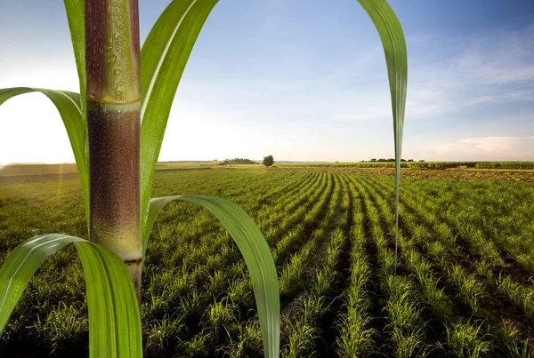

Monitoramos gases inflamáveis em canaviais em tempo real, permitindo ações rápidas e evitando perdas monetárias causadas por queimadas ilegais.

queimados no Brasil
entre 2023 e 2024
em prejuízos
ocorrem em São Paulo
A cultura da cana-de-açúcar consolida-se como um dos pilares estratégicos do agronegócio brasileiro. Todavia, o setor enfrenta vulnerabilidades críticas decorrentes de incêndios em larga escala.
O interior paulista é frequentemente atingido por focos de incêndio durante períodos de baixa umidade, gerando prejuízos econômicos brutais, degradação do solo e forte emissão de poluentes atmosféricos.
Identificação imediata de riscos em campo.
Estime perdas e entenda o impacto financeiro das queimadas
Tecnologia acessível para pequenos e médios produtores
Alertas imediatos para agir antes que o incêndio comece
Visualização inteligente com gráficos para tomada de decisão